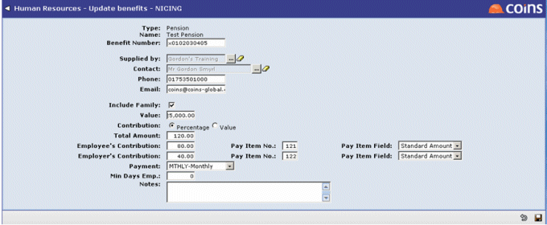

Payroll-HR Linking
It is possible to set up linking between Payroll and HR for salary and benefits amounts, and and absence records, so that information can be updated in one place and is automatically available in both modules. Linking of salary and benefit amounts is two-way; linking of and absence records is from Payroll to HR only.
Linking from HR to Payroll is via a HR Requests Workbench in Payroll. Linking from Payroll to HR can be via a Payroll Requests Workbench in HR or it can be direct.
OA Payroll Module
The Payroll module in contains the HR Requests Workbenches (one per period type). These workbenches are not available in as you must already have OA HR to make use of the linking functionality.
Setting Up The Links:
The following Parameters (in Parameters) enable the type of linking for Payroll to HR and HR to Payroll for salary and benefits:
- PRMAKEHR - whether adding an employee creates a HR record.
- HRPRBENEFIT - type of HR to Payroll linking for benefits.
- HRPRSALARY - type of HR to Payroll linking for salaries.
- PRHRBENEFIT - type of Payroll to HR linking for benefits.
- PRHRSALARY - type of Payroll to HR linking for salaries.
Payroll parameter setup:
- SALARY - for salary linking this must be set to the pay item that holds the annual salary in Payroll.
- HRREQUSR - a comma-separated list of users who will receive actions on their Activity Workbench screen for HR to Payroll requests.
HR parameter setup:
- SALFIELD - the field on the Payroll salary item which holds the annual salary amount which corresponds to the amount in HR.
- PRSALRES - the HR lookup code for the reason to use for a salary history record created via Payroll linking (optional).
- PRREQUSR - a comma-separated list of users who will receive actions on their Activity Workbench screen for Payroll to HR request.
The employee and employer items and fields used for benefits in Payroll can be defined individually for each benefit in HR using Benefits, as shown in the screenshot. The salary and benefits fields can be set as the standard amount, the standard input or the standard rate.
